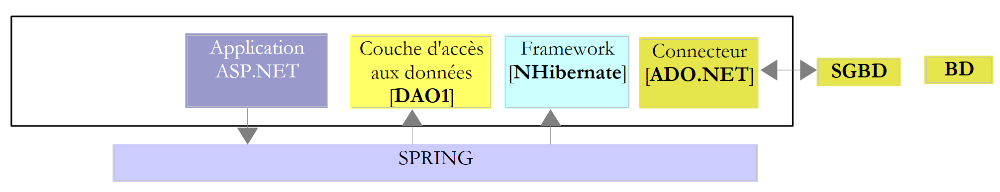
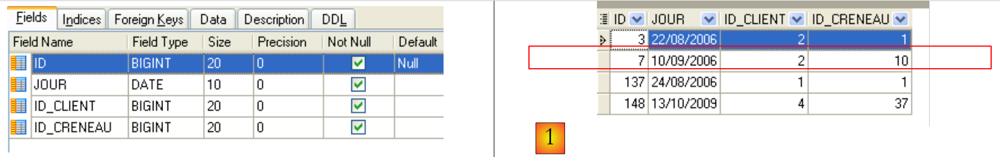

2. De -casestudy
2.1. Het probleem
Laten we terugkeren naar de applicatie die we willen bouwen. We gaan uit van een bestaande applicatie met de volgende architectuur:
 |
Voor wie meer wil weten over:
- NHibernate: Inleiding tot ORM Nhibernate [http://tahe.developpez.com/dotnet/nhibernate/];
- de ASP.NET-applicatie (WebForms) met NHibernate en Spring: Bouwen van een drielaagse webapplicatie met ASP.NET, Spring.NET en NHibernate [http://tahe.developpez.com/dotnet/pam-aspnet/].
We willen de vorige applicatie omzetten in deze:
 |
waarbij EF5 NHibernate heeft vervangen. Deze toepassing dient als aanleiding om EF5 te bestuderen. Omdat we met Spring.NET gemakkelijk van laag kunnen wisselen zonder alles te verstoren, zal toepassing 2 dezelfde laag [ASP.NET] gebruiken als toepassing 1. Aangezien dit document gewijd is aan EF5, zullen we het schrijven van deze laag niet toelichten. We zullen deze in applicatie 2 invoeren om te zien of het werkt. We zullen alleen de wijzigingen toelichten die moeten worden aangebracht in het configuratiebestand van Spring.NET.
De casestudy is als volgt. We willen artsen een afsprakenplanningsdienst aanbieden die volgens het volgende principe werkt:
- een secretariaatsdienst verzorgt de afspraken voor een groot aantal artsen. Deze dienst kan worden uitgevoerd door één persoon. Het salaris van deze persoon wordt gedeeld door alle artsen die gebruikmaken van de dienst;
- de secretariële dienst en alle artsen zijn aangesloten op het internet;
- de RV-afspraken worden opgeslagen in een centrale database, die via internet toegankelijk is voor zowel het secretariaat als de artsen;
- het vastleggen van RV gebeurt normaal gesproken door het secretariaat. Het kan ook door de artsen zelf worden gedaan. Dit is met name het geval wanneer de arts aan het einde van een consult zelf een nieuwe RV voor zijn patiënt vaststelt.
De architectuur van de dienst voor het vastleggen van RV is als volgt:
 |
Artsen kunnen efficiënter werken als ze zich niet meer met RV hoeven bezig te houden. Als er genoeg artsen meedoen, zal hun bijdrage aan de exploitatiekosten van het secretariaat gering zijn. We noemen de applicatie [RdvMedecins]. Hieronder tonen we enkele schermafbeeldingen van de werking ervan.
De startpagina van de applicatie ziet er als volgt uit:

Vanaf deze eerste pagina zal de gebruiker (secretariaat, arts) een aantal handelingen uitvoeren. Deze worden hieronder weergegeven. Het linkerscherm toont het scherm waarop de gebruiker een verzoek indient, het rechterscherm toont het antwoord dat door de server wordt verzonden.
 |
 |
 |
 |
 |
2.2. De database
De database die door de applicatie NHibernate wordt gebruikt, is een MySQL5-database met vier tabellen:

Deze zal als referentie dienen voor het opzetten van al onze databases.
2.2.1. De tabel [MEDECINS]
Deze bevat informatie over de artsen die door de applicatie [RdvMedecins] worden beheerd.
 |  |
- ID: identificatienummer van de arts – primaire sleutel van de tabel
- VERSION: identificatienummer van de versie van de rij in de tabel. Dit nummer wordt telkens met 1 verhoogd wanneer er een wijziging in de rij wordt aangebracht.
- NOM: de achternaam van de arts
- PRENOM: zijn of haar voornaam
- TITRE: zijn/haar aanspreektitel (mevrouw, meisje, meneer)
2.2.2. De tabel [CLIENTS]
De cliënten van de verschillende artsen worden opgeslagen in de tabel [CLIENTS]:
 |  |
- ID: identificatienummer van de klant – primaire sleutel van de tabel
- VERSION: nummer dat de versie van de rij in de tabel identificeert. Dit nummer wordt telkens met 1 verhoogd wanneer er een wijziging in de rij wordt aangebracht.
- NOM: de naam van de klant
- PRENOM: de voornaam
- TITRE: zijn/haar aanspreektitel (mevrouw, meisje, meneer)
2.2.3. De tabel [CRENEAUX]
Deze tabel bevat de tijdvakken waarin de RV mogelijk zijn:
 |
 |
- ID: nummer dat het tijdvak identificeert – primaire sleutel van de tabel
- VERSION: nummer dat de versie van de rij in de tabel identificeert. Dit nummer wordt met 1 verhoogd telkens wanneer er een wijziging in de rij wordt aangebracht.
- ID_MEDECIN: identificatienummer van de arts aan wie dit tijdslot toebehoort – vreemde sleutel op de kolom MEDECINS(ID).
- HDEBUT: starttijd van het tijdvak
- MDEBUT: minuten begin van het tijdvak
- HFIN: einduur van het tijdvak
- MFIN: minuten einde tijdslot
De tweede regel van de tabel [CRENEAUX] (zie [1] hierboven) geeft bijvoorbeeld aan dat tijdvak nr. 2 om 8.20 uur begint en om 8.40 uur eindigt en toebehoort aan arts nr. 1 (mevrouw Marie PELISSIER).
2.2.4. De tabel [RV]
Deze tabel geeft een overzicht van de RV die voor elke arts zijn vastgelegd:
 |
- ID: nummer dat de RV op unieke wijze identificeert – primaire sleutel
- JOUR: dag van de RV
- ID_CRENEAU: tijdvak van RV – externe sleutel op de kolom [ID] van de tabel [CRENEAUX] – bepaalt zowel het tijdvak als de betreffende arts.
- ID_CLIENT: nummer van de klant voor wie de reservering is gemaakt – externe sleutel op de kolom [ID] van de tabel [CLIENTS]
Deze tabel heeft een uniekheids -beperking op de waarden van de gekoppelde kolommen (JOUR, ID_CRENEAU):
Als een rij in de tabel [RV] de waarde (JOUR1, ID_CRENEAU1) voor de kolommen (JOUR, ID_CRENEAU), dan mag deze waarde nergens anders voorkomen. Anders zou dit betekenen dat er twee RV’en tegelijkertijd voor dezelfde arts zijn vastgelegd. Vanuit het oogpunt van Java-programmering start de driver JDBC van de database een SQLException wanneer dit zich voordoet.
De regel met id gelijk aan 7 (zie [1] hierboven) betekent dat er op 10-09-2006 een RV is geboekt voor tijdvak nr. 10 en klant nr. 2. Uit de tabel [CRENEAUX] blijkt dat tijdvak nr. 10 overeenkomt met het tijdvak van 11.00 tot 11.20 uur en toebehoort aan arts nr. 1 (mevrouw Marie PELISSIER). Uit de tabel [CLIENTS] blijkt dat klant nr. 2 mevrouw Christine GERMAN is.
Deze casestudy is het onderwerp van een Java-artikel [http://tahe.developpez.com/java/primefaces], waarin gebruik wordt gemaakt van Hibernate voor Java (ORM).